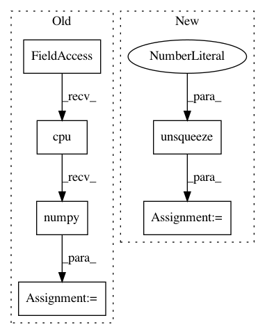

3b57e88a66ba1f410be70dbd2ad2899b5b1bcb0e,server/synthesizer.py,Synthesizer,tts,#Synthesizer#Any#,155
Before Change
postnet_output, decoder_output, alignments)
if self.wavernn:
postnet_output = postnet_output[0].data.cpu().numpy()
wav = self.wavernn.generate(torch.FloatTensor(postnet_output.T).unsqueeze(0).cuda(), batched=self.config.is_wavernn_batched, target=11000, overlap=550)
else:
wav = inv_spectrogram(postnet_output, self.ap, self.tts_config)
// trim silence
After Change
vocoder_input.cuda()
wav = self.pwgan.inference(vocoder_input, hop_size=self.ap.hop_length)
if self.wavernn:
vocoder_input = torch.FloatTensor(postnet_output.T).unsqueeze(0)
if self.use_cuda:
vocoder_input.cuda()
wav = self.wavernn.generate(vocoder_input, batched=self.config.is_wavernn_batched, target=11000, overlap=550)
else:
wav = inv_spectrogram(postnet_output, self.ap, self.tts_config)
// trim silence
wav = trim_silence(wav, self.ap)
In pattern: SUPERPATTERN
Frequency: 4
Non-data size: 6
Instances
Project Name: mozilla/TTS
Commit Name: 3b57e88a66ba1f410be70dbd2ad2899b5b1bcb0e
Time: 2020-02-19
Author: reuben.morais@gmail.com
File Name: server/synthesizer.py
Class Name: Synthesizer
Method Name: tts
Project Name: ixaxaar/pytorch-dnc
Commit Name: 2026a8939d9ccc3e26ac776db5b4788846fd166c
Time: 2017-12-03
Author: root@ixaxaar.in
File Name: dnc/sparse_memory.py
Class Name: SparseMemory
Method Name: read_from_sparse_memory
Project Name: leftthomas/SRGAN
Commit Name: 1433d4c435a253e891009b08a9280bc452087db0
Time: 2017-11-21
Author: leftthomas@qq.com
File Name: test.py
Class Name:
Method Name:
Project Name: mozilla/TTS
Commit Name: 02e6d0538272f589d6c3c290b81575b7bd866991
Time: 2020-02-13
Author: reuben.morais@gmail.com
File Name: server/synthesizer.py
Class Name: Synthesizer
Method Name: tts